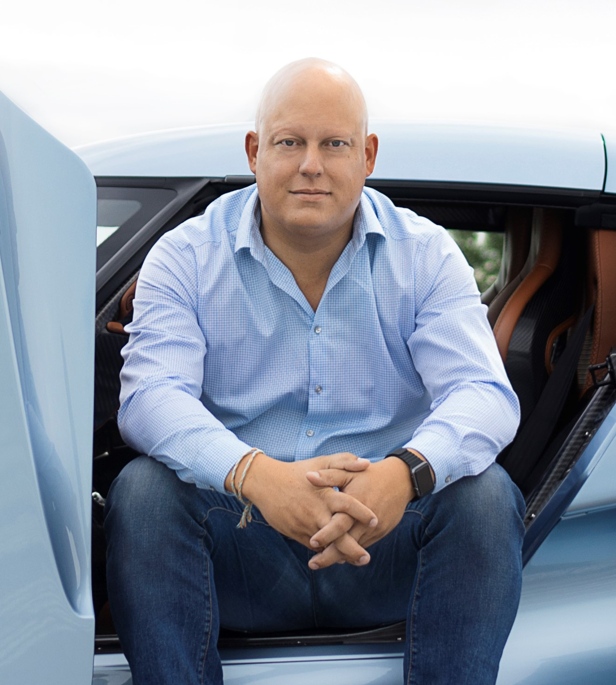

gambar

Ini adalah gambar Christian-Von-Koenigsegg.
Christian von Koenigsegg
Christian von Koenigsegg adalah seorang pengusaha Swedia dan pendiri Koenigsegg Automotive AB, produsen mobil sport kinerja tinggi. Dilahirkan pada 2 Juli 1972, di Stockholm, Swedia, Christian von Koenigsegg memiliki minat besar dalam mobil sejak usia muda.
Pada tahun 1994, pada usia 22 tahun, Christian mendirikan Koenigsegg Automotive AB dengan tujuan untuk menciptakan mobil sport kinerja tertinggi di dunia. Mobil produksi pertama, Koenigsegg CC8S, diperkenalkan pada tahun 2002. Sejak itu, Koenigsegg telah mendapatkan reputasi sebagai produsen mobil tercepat dan paling canggih di dunia.
Mobil Koenigsegg dikenal dengan teknologi mutakhirnya, konstruksi ringan, dan mesin yang kuat. Perusahaan ini telah mencapai beberapa tonggak sejarah otomotif, termasuk pengembangan Koenigsegg Jesko Absolut, yang diklaim sebagai mobil produksi tercepat di dunia.
Christian von Koenigsegg diakui karena pendekatannya yang inovatif terhadap desain dan rekayasa mobil, mendorong batas-batas yang mungkin dalam industri otomotif. Di bawah kepemimpinannya, Koenigsegg telah menjadi simbol keahlian teknik Swedia dan keunggulan di dunia hypercar.
Koenigsegg Automobile

Koenigsegg Automotive AB adalah produsen mobil sport kinerja tinggi yang berbasis di Ängelholm, Swedia. Didirikan pada tahun 1994 oleh Christian von Koenigsegg, perusahaan ini terkenal karena memproduksi hypercar dengan teknologi canggih dan kinerja luar biasa.
Koenigsegg terkenal dengan pendekatannya yang inovatif terhadap desain mobil, penggunaan teknologi canggih, dan pengembangan mesin yang sangat kuat. Mereka telah menghasilkan beberapa model mobil super cepat dan eksklusif, seperti Koenigsegg Jesko, Koenigsegg Regera, Agera RS, dan model-model sebelumnya seperti CCX, CCXR, dan CC8S.
Salah satu ciri khas Koenigsegg adalah komitmen mereka terhadap teknologi ramah lingkungan. Misalnya, Koenigsegg Regera menggunakan solusi teknologi hibrida yang inovatif untuk meningkatkan efisiensi bahan bakar sambil tetap mempertahankan kinerja tinggi.
Selain memproduksi mobil sport, Koenigsegg juga terlibat dalam proyek-proyek pengembangan teknologi, seperti pengembangan mesin bebas emisi, teknologi berkelanjutan, dan penelitian-penelitian dalam industri otomotif yang inovatif.
website Koenigsegg : Visit Koenigsegg.com!